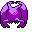

#192
Crobat
Poison
As a result of its pursuit of faster, yet more silent flight, a new set of wings grew on its hind legs
Base stats Total 450
HP85
Attack90
Defense80
Speed130
Special65
Details
- Species
- Bat
- Height
- 5'11"
- Weight
- 165.0 lb
- Catch rate
- 90
- Base exp
- 204
- Growth
- Medium Fast
Level-up moves
LevelMoveType
StartLeech LifeBug
StartScreechNormal
StartBiteDark
Lv 12Gust
Lv 18SupersonicNormal
Lv 25Wing Attack
Lv 36Confuse RayGhost
Lv 40Sludge BombPoison
Lv 44HazeIce
Lv 48ToxicPoison
Evolution
Evolves from Golbat
Where to find
Not found in the wild — evolve, trade or catch it elsewhere.
TM / HM
TM02 Razor WindTM04 CrunchTM06 ToxicTM07 Shadow BallTM10 Double-EdgeTM15 Hyper BeamTM21 Mega DrainTM31 MimicTM32 Double TeamTM39 SwiftTM40 Sludge BombTM43 Sky AttackTM44 RestTM50 SubstituteHM02 Fly